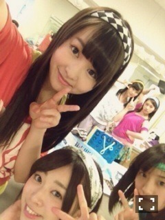

| 2013/05 05 Sun | 418回目*marika |
『16人のプリンシパルdeux』
ブログ更新しない間に
4公演が終わりました！
ブログ更新してなくてすみません。

いろんな気持ちがある。
体力の面でも。
でも乗り越えなきゃいけないです。
全部反省なのですが、
やっぱり楽しいです！
2日目は昼にいつみに挑戦し、
夜に美咲子を演じることができました。
今日昼に初めて北嶋に挑戦しました。
演じることができて
すごい嬉しかったです！
夜は女中5に選ばれました。
いつみはまた挑戦したい！
投票してくださった
みなさんありがとうございました！
公演が終わるまで
納得のいく演技ができたらいいなあ。
毎日頭痛くなるくらい
悩んで考えるの大事。
良い公演になっていったらいいな。
来てくださったみなさん
ありがとうございました♪
明日も頑張る

まりか
コメント(327)
2013/05/05 23:48